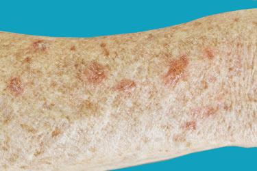
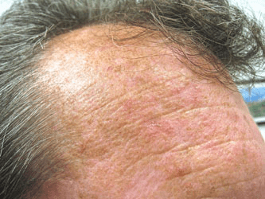

Treatment for more advanced or widespread cases of actinic keratosis includes medication in the form of various creams and gels. Some medicated creams include:
In cases where a person only has a few spots or patches, a doctor may recommend
removing the affected area through minor surgery. Two of the more common surgery
options are curettage and cryotherapy.
Scraping, which is referred to as curettage, involves a device called a curette,
to scrape off the damaged skin cells. In some cases, electrosurgery is used
immediately after scraping. Electrosurgery involves a doctor using a pen-shaped
instrument, to destroy and cut away the affected tissue with an electric current.
Both procedures require a local anesthetic. Some people experience side effects,
including scarring, discoloration, and infection.
Freezing, referred to as cryotherapy, removes the lesions by freezing them with
liquid nitrogen. A doctor applies the liquid nitrogen to the skin when the
extreme cold causes the affected area to blister and peel. As the skin heals,
the lesions fall off, allowing new, undamaged skin to appear.
Cryotherapy is the most common treatment for actinic keratosis. This is partly
because it can be done in the doctor's office and takes only a few minutes.
Side effects may include:
Photodynamic therapy involves the application of a chemical to the affected
areas of skin. The doctor then shines an artificial light on the chemical,
which, in turn, kills the damaged cells and removes the actinic keratosis.
Side effects may include redness, swelling, and burning, which may be felt
during the procedure.
A person and their doctor will work together to decide the best option or
options. In some cases, a person may have regular treatment for recurring
patches.